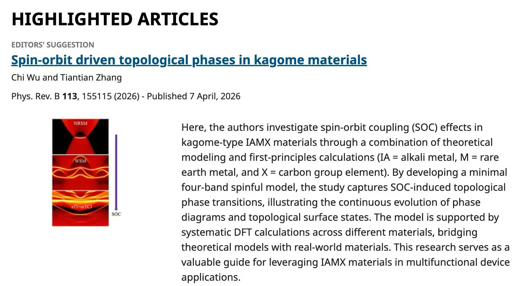

Chi Wu and Tiantian Zhang
Physical Review B 113, 155115 (2026) Editor's Suggestion
Spin-orbit driven topological phases in kagome materials
Chi Wu and Tiantian Zhang
Spin-orbit driven topological phases in kagome materials
Phys. Rev. B 113, 155115 (2026) Editor's Suggestion